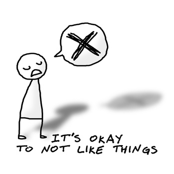
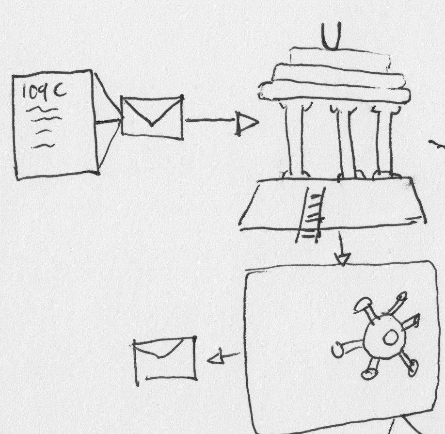
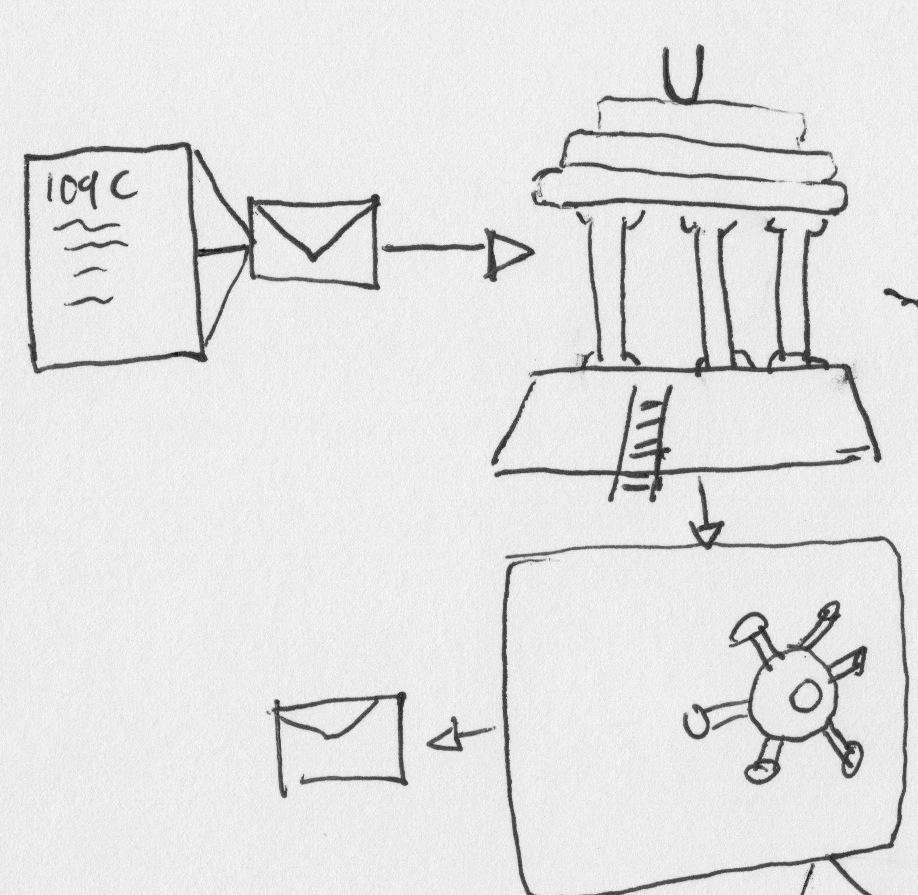

I Accidentally Wrote My Best Code
Michael Ries
@hqmq_
I Love MWRC
Disclaimer

ACME is going to start sending us registrations. Can you make sure we flag them for marketing?
Sure thing boss!
How long will it take?
...2 months later
...a pipeline...
...with logs...
...vendor-specific mapping...
...registration office at a University...
...with paperwork...
...translators for foreign students...
Protip
System Metaphor
- Kent Beck
Protip
Talk To People Verbally
Write It Down
 

Protip
Intentional Abstraction
Protip
Draw BIG
Draw Small
Why Your First Idea Can Blind You to a Better One
- Merim Bilalić and Peter McLeod
http://www.scientificamerican.com/article/why-your-first-idea-can-blind-you-to-better-idea/
Protip
Iterative Refinement
Protip
Your First Thought Is Wrong
Can we fix registrations from X?
Yes, lets migrate them to the new system.
Protip
Sleep On It
Duplication is far cheaper than the wrong abstraction
- Sandi Metz
"All the little things" Ruby On Ales 2014
[almost anything] is far cheaper than the wrong abstraction
End
hqmq.github.io/presentation-accidental-design